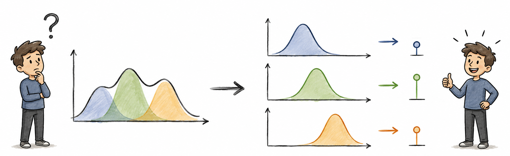
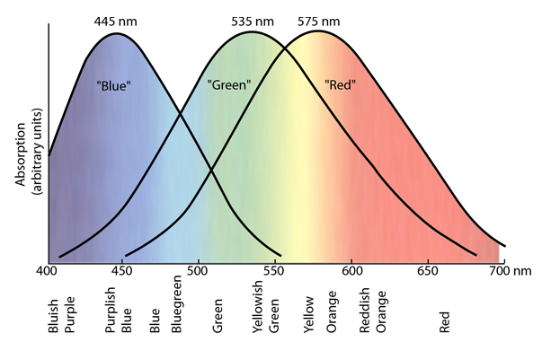
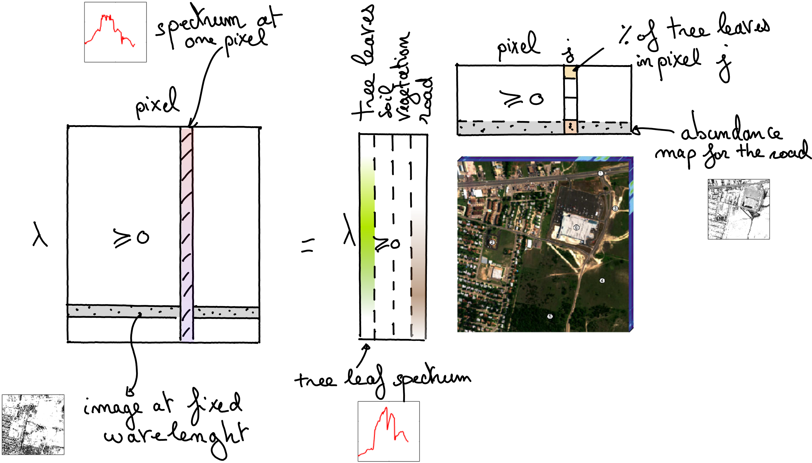
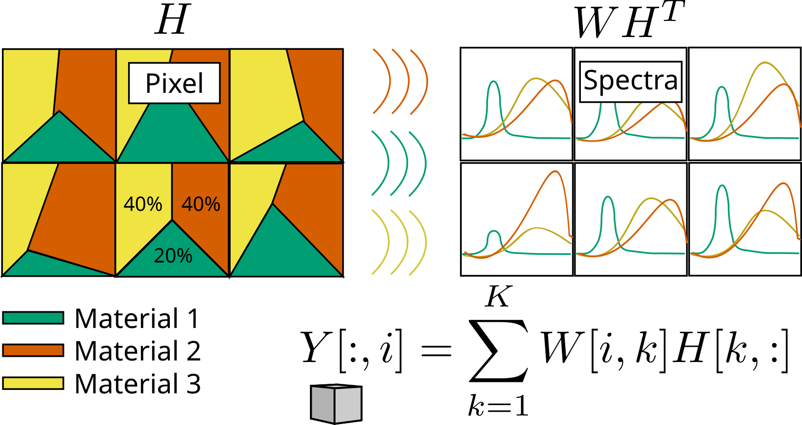
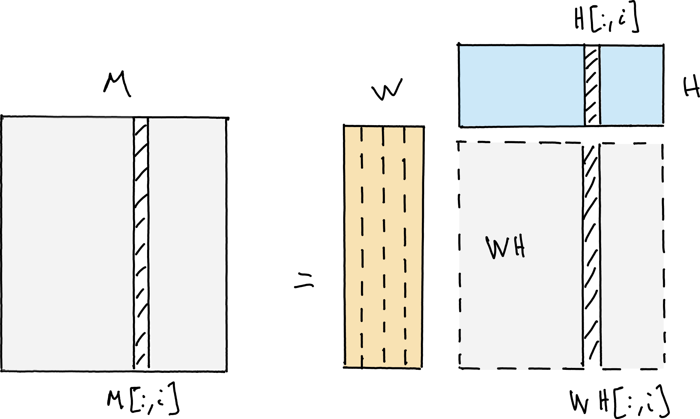
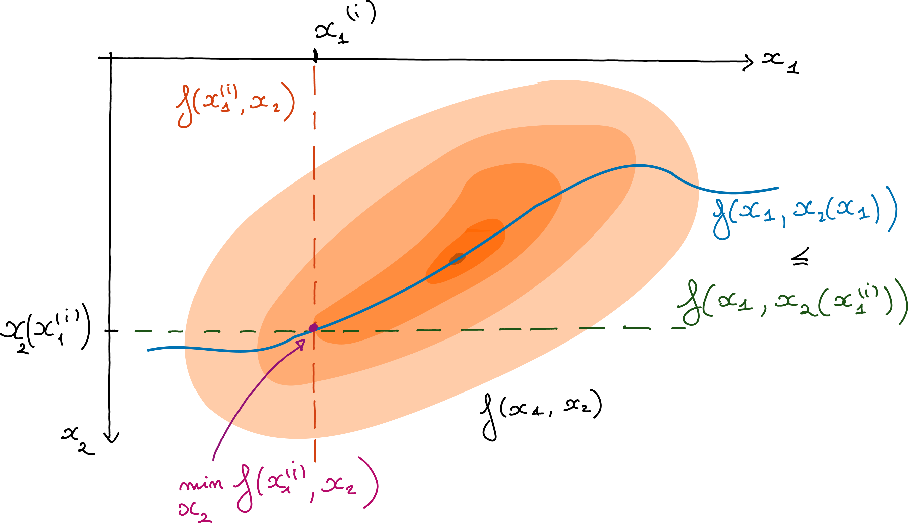
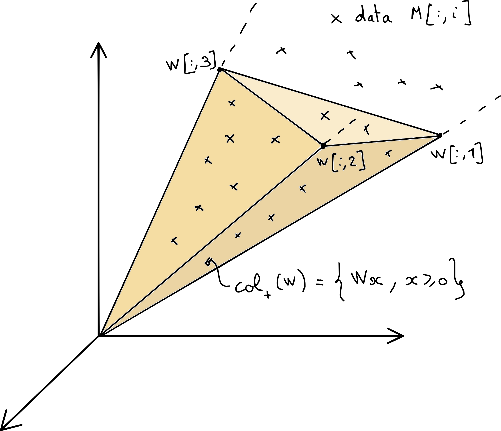
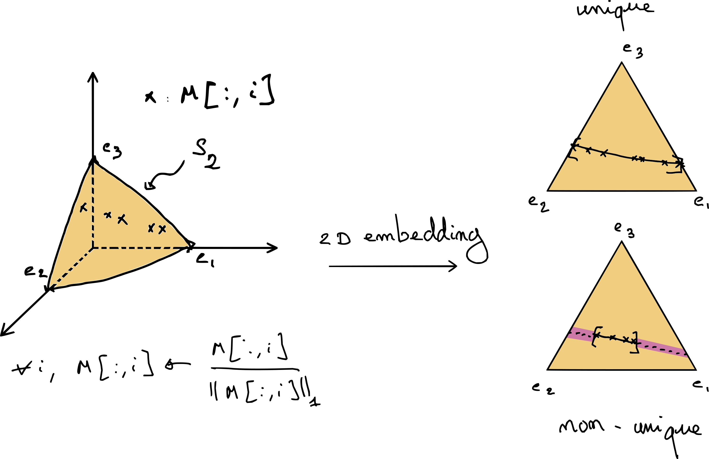
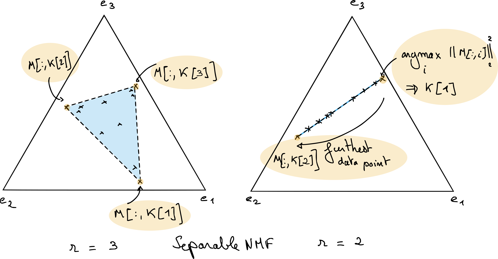
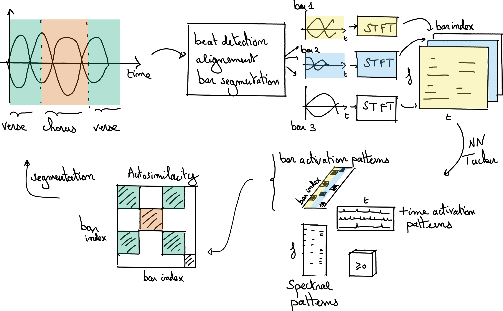

Masterclass on Nonnegative Low-Rank Approximations
Lecture 1 — Nonnegative matrix and tensor low-rank approximations
2026-01-01
Masterclass on nonnegative LRA
Lecture 1
Nonnegative matrix and tensor low-rank approximations
- theory of regularized low-rank models
- source separation viewpoint
- NMF, nonnegative CP, and nonnegative Tucker
Jérémy Cohen
CREATIS, CNRS

Regularized low-rank approximation
Low-rank models appear in many inverse problems and source-separation tasks.
\[ \min_{W,H} f(M,WH^\top) + g_W(W) + g_H(H) \]
Typical choices:
- \(f(M,WH^\top)=\|M-WH^\top\|_F^2\)
- \(g_W,g_H\) enforce nonnegativity, sparsity, or structure
Matrix low-rank models
Two equivalent viewpoints:
\[ M = UV^\top = \sum_{q=1}^r U[:,q]V[:,q]^\top \]
- subspace view: \(U\) spans a low-dimensional subspace
- atomic view: \(M\) is a sum of \(r\) rank-one matrices
From observations to latent components
- We observe mixtures, not isolated sources
- We seek a small number of latent patterns
- We explain each observation as combinations of these patterns
This is the common structure behind hyperspectral imaging, chemometrics, music, and biomedical data.

Spectra as a compressed observation model
- a spectrum \(s(\lambda)\) lives in a high-dimensional function space
- RGB is a 3-dimensional compression of \(s\)
- the compression is linear but lossy

\[ c_j = \int_{\Lambda} \phi_j(\lambda)s(\lambda)\,d\lambda \approx \Phi_j s \]
for \(j \in \{R,G,B\}\).
Additive vs subtractive mixtures
- Additive mixture: superposition of several light sources
- Subtractive mixture: sequential filtering of one source
- Additive mixtures are often well approximated by linear models
- Linear mixture models lead naturally to low-rank factorizations
Linear mixing model
For a spectral image:
\[ Y[:,i] \approx \sum_{k=1}^{K} W[:,k] H[k,i] \]
- \(W[:,k]\): spectrum of material \(k\)
- \(H[k,i]\): abundance of material \(k\) in pixel \(i\)
Globally:
\[ Y \approx WH \]

Source separation viewpoint
- columns of \(W\): latent sources / templates
- columns of \(H^\top\): activations / mixing coefficients
- low rank = small number of sources
With \(r\) sources:
\[ M \approx WH^\top,\qquad W\in\mathbb{R}_+^{n_1\times r},\;H\in\mathbb{R}_+^{n_2\times r}. \]

Matrix model details
Matrix as a collection of vectors
Let \(M \in \mathbb{R}^{n_1 \times n_2}\).
- each column of \(M\) is a vector in \(\mathbb{R}^{n_1}\)
- if all columns lie in a subspace of dimension \(r\), then
\[ M = UV^\top \]
with \(U \in \mathbb{R}^{n_1 \times r}\) and \(V \in \mathbb{R}^{n_2 \times r}\).

Low rank as dimensionality reduction
- \(U\) stores a basis of a low-dimensional subspace
- each row of \(V\) stores coordinates in that basis
- if \(r \ll \min(n_1,n_2)\), the data admits a compact representation
This is the linear-algebra view of low rank.
Low rank as a sum of rank-one atoms
The same model can be written as
\[ M[i,j] = \sum_{q=1}^{r} U[i,q]V[j,q] \]
or equivalently
\[ M = \sum_{q=1}^{r} U[:,q]V[:,q]^\top. \]
Why rank-one atoms matter
- rank-one matrices are simple building blocks
- a low-rank matrix uses only a few such atoms
- low rank is therefore a notion of model complexity
This atomic viewpoint will transfer nicely to tensors.
Parameter counting
- full matrix: \(n_1 n_2\) parameters
- rank-\(r\) factorization: \((n_1+n_2)r\) parameters
When \(r\) is small, low-rank models can both
- compress data
- reveal latent structure
Exact factorization vs approximation
In applications, the data is usually not exactly low rank.
We therefore seek a rank-\(r\) approximation:
\[ \min_{\operatorname{rank}(N)\le r} \|M-N\|_F^2 \]
or, in factorized form,
\[ \min_{U,V} \|M-UV^\top\|_F^2. \]
The Eckart-Young theorem
If \(M = ASB^\top\) is an SVD, then the best rank-\(r\) approximation in Frobenius norm is given by the truncated SVD:
\[ M_r = A_{:,1:r} S_{1:r,1:r} B_{:,1:r}^\top. \]
This is one of the rare nonconvex problems with a direct optimal solution.
PCA as a low-rank approximation
Why this result is exceptional
- It relies on
- Frobenius (or spectral) norm
- no extra constraints
- orthogonality hidden in the SVD
- As soon as we change the loss or add constraints, closed forms usually disappear
When SVD is not enough
In source separation, the factors must often satisfy physical properties:
- nonnegativity
- sparsity
- simplex constraints
- structural coupling across modes
Then “best approximation” is no longer the full story.
Why are data matrices often approximately low-rank?
Three recurring explanations:
- latent-variable models often generate approximately low-rank matrices
- separable multivariate phenomena produce rank-one terms
- mixtures of a few sources naturally lead to small-rank models
Reason 1: latent variables
- many generative models depend on a small number of hidden variables
- observed features become correlated
- the data matrix is then well approximated in a low-dimensional subspace
Reason 2: separable maps
Rank-one matrices correspond to separable functions:
\[ f(x,y)=f_1(x)f_2(y). \]
Sums of a few separable terms are ubiquitous in physics and signal processing.
Reason 3: source separation
- a few sources are mixed in varying proportions
- templates stay mostly fixed
- activations vary across samples
Hence
\[ M \approx UV^\top \]
with a rank equal to the number of sources.
But do the factors mean anything?
Approximation quality alone is not enough.
We also care about:
- identifiability: are the factors essentially unique?
- robustness: are they stable in the presence of noise?
Rotation ambiguity
If
\[ M = U_1V_1^\top = U_2V_2^\top, \]
then in general
\[ U_1 = U_2Q,\qquad V_1 = V_2Q^{-\top} \]
for some invertible matrix \(Q\).
Consequence of rotation ambiguity
- the subspace may be identifiable
- the individual factors are generally not
- this is a major obstacle for source separation
So we need regularization or a richer model.
Nonnegative Matrix Factorization
Definition of NMF
For a nonnegative matrix \(M\),
\[ M \approx WH \]
with
\[ W \in \mathbb{R}_+^{n_1 \times r}, \qquad H \in \mathbb{R}_+^{r \times n_2}. \]
Why nonnegativity?
Nonnegativity is natural when factors represent:
- spectra
- concentrations
- images
- abundances
- energies
- probabilities or counts
NMF as a constrained approximation problem
Typical formulation in Frobenius norm:
\[ \min_{W \ge 0,\; H \ge 0} \|M-WH\|_F^2 \]
- no general closed form
- nonconvex
- still tractable in practice
What changes compared to SVD?
- better interpretability
- physically plausible factors
- potentially improved identifiability
but also
- harder optimization
- no exact analogue of truncated SVD
- rank selection becomes more difficult
How do we fit NMF?
High-level idea:
- fix \(H\), update \(W\)
- fix \(W\), update \(H\)
- repeat until convergence
This is the core principle behind many alternating algorithms.
Alternating optimization at a glance
At a high level, we cycle between simple subproblems:
\[ \begin{cases} W^{(k+1)} = \arg\min_{W \ge 0} f(M,WH) + g_W(W) \\ H^{(k+1)} = \arg\min_{H \ge 0} f(M,W^{(k+1)}H) + g_H(H) \end{cases} \]
- one block is updated at a time
- each step is simpler than the full problem
- this philosophy extends to nCP and NTD

Fitting NMF in practice
Common choices include:
- Alternating Nonnegative Least Squares (ANLS)
- Hierarchical Alternating Least Squares (HALS)
- multiplicative updates
Lecture 2 will explain why NNLS is the central subproblem.
The rank question
- in SVD, singular values help a lot
- in NMF, deflation is not so simple
- several ranks are often tried in practice
- the smallest exact feasible rank is the nonnegative rank
NMF geometry: conic viewpoint
Each column of \(M\) belongs to the cone generated by the columns of \(W\):
\[ M[:,j] \in \operatorname{cone}(W). \]
NMF is therefore a geometric problem in the nonnegative orthant.
A conic interpretation of NMF

Why NMF is often non-unique
Even with nonnegativity, many cones may contain the same data cloud.
- low reconstruction error does not imply factor uniqueness
- good source separation needs stronger geometric information
A simple picture of non-uniqueness

Normalizing onto the simplex
If columns are \(\ell_1\)-normalized, we can project the geometry onto the simplex.
Then:
- data become points in a polytope
- columns of \(W\) become vertices or extreme rays
- columns of \(H^\top\) describe convex combinations
Exact NMF on the simplex

Geometric lesson from the simplex view
For low-dimensional exact NMF:
- uniqueness becomes possible when data touch the boundary
- if data remain strictly inside, many factorizations may coexist
So the data geometry matters as much as the loss function.
A key identifiability idea: sufficiently scattered
- data should spread widely inside the cone / simplex
- points should get close to extreme directions
- the feasible cone around the data becomes much tighter
This explains why sparse or extreme observations are very valuable.
Three major regularization families for NMF
- Separable NMF
- Sparse NMF
- Minimum-volume / maximum-volume NMF
All aim at ruling out unrealistic factorizations.
Separable NMF
Assumption:
\[ M = M[:,\mathcal{K}] H \]
for some subset of columns \(\mathcal{K}\).
Interpretation: the templates are present in the data themselves.
Geometry of separable NMF

Why separable NMF is useful
- strong interpretability
- efficient algorithms exist
- excellent initialization for generic NMF solvers
Limitation:
- it fails when no nearly pure data point is observed
Sparse NMF
Typical idea:
\[ \min_{W,H \ge 0} \|M-WH\|_F^2 + \lambda\,\Omega(W,H) \]
with \(\Omega\) promoting zeros in \(W\) and/or \(H\).
Sparsity often pushes solutions toward more identifiable geometries.
Minimum-volume NMF
- choose the cone generated by \(W\) as tight as possible around the data
- relaxes the pure-pixel assumption of separability
- often linked to maximizing the spread of coefficients in \(H\)
Very relevant when mixtures are real but pure sources are absent.
NMF: what to remember
- NMF is much more interpretable than unconstrained LRA
- but nonnegativity alone does not solve everything
- identifiability depends on geometry and regularization
- optimization deserves dedicated methods
Short pause before tensors
Matrices model mixtures indexed by two axes.
But many datasets are naturally indexed by:
- frequency × time × bar
- wavelength × row × column
- feature × sample × condition
This leads to tensors.
Tensor decompositions
Why tensors?
- multiway data carries richer structure than a flattened matrix
- flattening may destroy interactions between modes
- multilinear models preserve these interactions
What is a tensor?
Informally:
- a scalar is order 0
- a vector is order 1
- a matrix is order 2
- a tensor is order 3 or more
In data science, tensors are often just multiway arrays.
Matrix intuition still helps
Good news:
- many tensor ideas are extensions of matrix ideas
- rank-one building blocks still matter
- alternating algorithms still appear
Bad news:
- uniqueness and optimization behave differently
Rank-one tensors
For a third-order tensor,
\[ x \otimes y \otimes z \]
is the tensor with entries
\[ (x \otimes y \otimes z)[i,j,k] = x[i]y[j]z[k]. \]
Two main tensor models today
- CP decomposition
- sum of rank-one tensors
- Tucker decomposition
- multilinear dimensionality reduction with a core tensor
CP decomposition
For \(T \in \mathbb{R}^{n_1 \times n_2 \times n_3}\),
\[ T[i,j,k] = \sum_{q=1}^{r} A[i,q]B[j,q]C[k,q]. \]
It is the tensor analogue of decomposing data into rank-one atoms.
CP decomposition as a picture

Why CP is important
- it can be essentially unique under generic conditions
- this is a major contrast with matrix factorizations
- it is both a source separation model and a dimensionality reduction tool
Where does CP identifiability come from?
Very informally:
- each slice must share the same latent factors
- this coupling removes rotation ambiguities
- the intersection of all compatible matrix factorizations becomes much smaller
CP as coupled matrix factorization
For each slice \(k\),
\[ T[:,:,k] = A\,\operatorname{Diag}(C[k,:])\,B^\top. \]
Same factors \(A\) and \(B\) are reused across all slices.
That shared structure is the key.
Approximate CP decomposition
With Frobenius loss, we solve
\[ \min_{A,B,C} \|T-\llbracket A,B,C \rrbracket\|_F^2. \]
This is again a nonconvex multiblock problem.
How is CP fitted?
The classical algorithm is ALS:
- update \(A\)
- update \(B\)
- update \(C\)
- repeat
Each subproblem is linear least squares.
A caveat: CP approximation can be ill-posed
- the set of tensors of rank at most \(r\) is not closed
- a best rank-\(r\) approximation may fail to exist
- components can diverge while compensating each other
This is very different from the matrix case.
Why regularization matters again
Regularization for tensor models can help with:
- interpretability
- robustness
- optimization landscape
- existence of a minimizer
Nonnegative CP decomposition
For nonnegative tensor data,
\[ \min_{A \ge 0,\; B \ge 0,\; C \ge 0} \|T-\llbracket A,B,C \rrbracket\|_F^2 \]
This is the direct tensor analogue of NMF.
Why nonnegative CP is attractive
- factors remain physically meaningful
- nonnegativity prevents cancellation at infinity
- the approximation problem becomes well posed
So nonnegativity helps both modeling and optimization.
How do we fit nonnegative CP?
- alternating updates are still the default choice
- each factor update becomes a set of NNLS problems
- the method is often called ANLS
Again, Lecture 2 will provide the algorithmic engine.
Tucker and nonnegative Tucker
Tucker decomposition
For a third-order tensor,
\[ T = \llbracket U,V,W;G \rrbracket \]
with:
- factor matrices \(U,V,W\)
- a smaller core tensor \(G\)
Tucker decomposition as a picture

Tucker as multilinear dimensionality reduction
The model writes
\[ T = G \times_1 U \times_2 V \times_3 W. \]
- \(U,V,W\) define low-dimensional subspaces
- \(G\) stores interactions in reduced coordinates
Multilinear ranks
Instead of one rank \(r\), Tucker uses
\[ (r_1,r_2,r_3) \]
with \(r_i \le n_i\).
This gives much more flexibility than CP.
Tucker vs CP
CP
- diagonal core
- stronger compression
- stronger uniqueness properties
Tucker
- dense core
- more flexible interactions
- closer to matrix subspace models
Tucker is not identifiable in general
There are rotation ambiguities in each mode:
\[ U \mapsto UQ,\qquad G \mapsto G \times_1 Q^{-1} \]
and similarly for the other modes.
So Tucker is usually not unique without extra constraints.
Classical Tucker regularization
The standard choice is orthogonality:
- orthogonal factors define principal multilinear subspaces
- HOSVD gives a strong computational baseline
This is the tensor counterpart of PCA-style dimensionality reduction.
Nonnegative Tucker decomposition (NTD)
For nonnegative data, we may instead seek
\[ T \approx \llbracket U,V,W;G \rrbracket \]
with
\[ U,V,W,G \ge 0. \]
Why nonnegative Tucker?
- preserves interpretability in every mode
- more flexible than nCP when interactions are not diagonal
- often very natural for count, spectrogram, or image-like tensors
Application viewpoint for NTD
For music structure analysis, a tensor can index:
- frequency
- time within a bar
- bar index
NTD then extracts recurring patterns jointly across these modes.

How do we fit NTD?
Typical strategy:
- fix all blocks except one
- solve a nonnegative least-squares type subproblem
- cycle over factor matrices and the core tensor
This is again alternating optimization.
NTD is algorithmically close to NMF
- same nonnegativity philosophy
- same NNLS building blocks
- same importance of initialization and scaling
- but more expensive tensor contractions
The main open question
For NTD, a major unresolved theme is:
when is the decomposition identifiable?
Compared with CP, the answer is still much less complete.
Why this matters
If NTD is used only for compression, ambiguity may be acceptable.
If NTD is used for:
- source separation
- pattern discovery
- scientific interpretation
then ambiguity becomes a real issue.
A practical summary of tensor choices
- choose CP/nCP when rank-one latent components are expected
- choose Tucker/NTD when multilinear subspaces and interactions matter
- add regularization when interpretability is essential
Wrap-up
What we learned today
- low-rank models can be read as compression tools and source separation models
- unconstrained matrix LRA is powerful but not identifiable enough
- NMF introduces physically meaningful constraints
- tensors extend the story with CP and Tucker models
The recurring theme
Across all these models, three questions keep coming back:
- What structure do we want?
- Is it identifiable?
- How do we optimize it efficiently?
Looking ahead to Lecture 2
Lecture 2 focuses on the optimization core behind these models:
- Nonnegative Least Squares (NNLS)
- KKT conditions
- HALS
- multiplicative updates
- KL-based variants
Take-home message
Low-rank approximation is easy to motivate.
Interpretable low-rank approximation is the real challenge.
That is precisely why nonnegativity, geometry, and optimization matter so much.
Masterclass - Jérémy Cohen - 2026